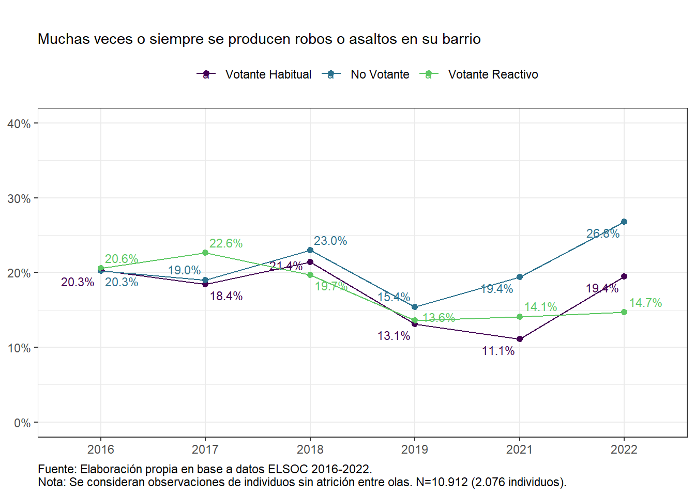
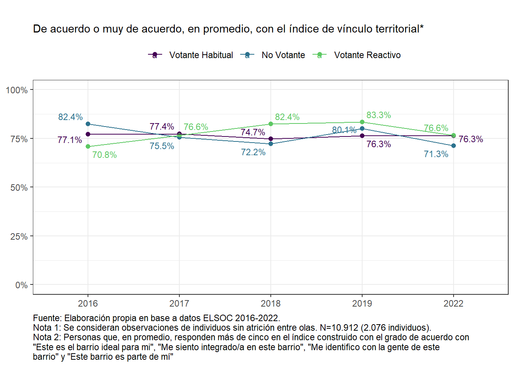
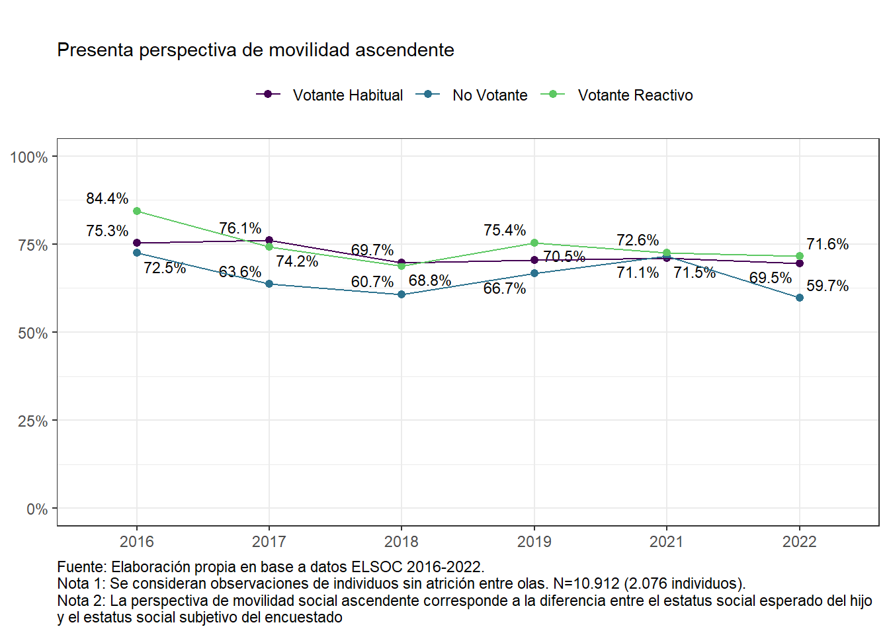

Radiografía del Cambio Social en Chile 2016-2021
Introducción
1
Presentación del estudio
1.1
Sobre COES
1.2
Sobre ELSOC
Descripción del estudio
Acceso a Bases de Datos ELSOC
Características del diseño muestral
Características del levantamiento de datos
1.3
Atrición de la muestra
Atrición acumulada según Sexo, Grupo etáreo, Nivel educacional y Estrato
1.4
Foco en el cambio longitudinal
2
Transformaciones políticas
2.1
Participación electoral y proceso constituyente
2.2
Actitudes hacia la democracia
2.3
Identidad e involucramiento político
2.4
Confianza institucional
2.5
Movilización social
2.6
Opinión pública y contingencia
2.7
Justificación de la violencia
3
Cohesión socio-territorial
3.0.1
Conflicto territorial y seguridad
3.0.2
Conflicto indígena
3.0.3
Conflicto migratorio
4
Bienestar (nombre temporal)
4.0.1
Salud Mental y Bienestar
4.0.2
Covid 19
4.0.3
Seguridad Económica y Laboral
4.0.4
Confianza interpersonal
4.0.5
Altruismo social generalizado
4.0.6
Justicia social
4.0.7
Meritocracia
4.0.8
Justicia Distributiva
4.0.9
Percepción de desigualdad
4.0.10
Identidad Nacional
4.0.11
Clase social subjetiva
4.0.12
Movilidad social
4.0.13
Seguridad Económica Ahorros
4.0.14
Seguridad Económica Sobrecarga de deuda
4.0.15
Percepción de diferencias salariales
4.0.16
Salarios Justos
Ver fuente
Radiografía del Cambio Social en Chile 2016-2022
Capítulo 3
Cohesión socio-territorial
3.0.1
Conflicto territorial y seguridad
3.0.1.1
Conflicto barrial
3.0.1.2
Criminalidad barrial

3.0.1.3
Inseguridad barrial
3.0.1.4
Confianza en vecinos
3.0.2
Conflicto indígena


3.0.3
Conflicto migratorio